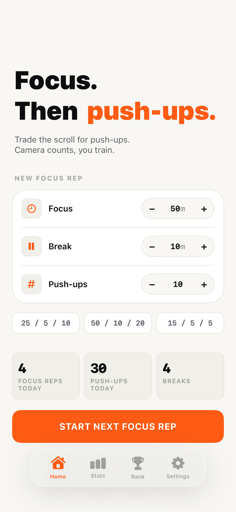
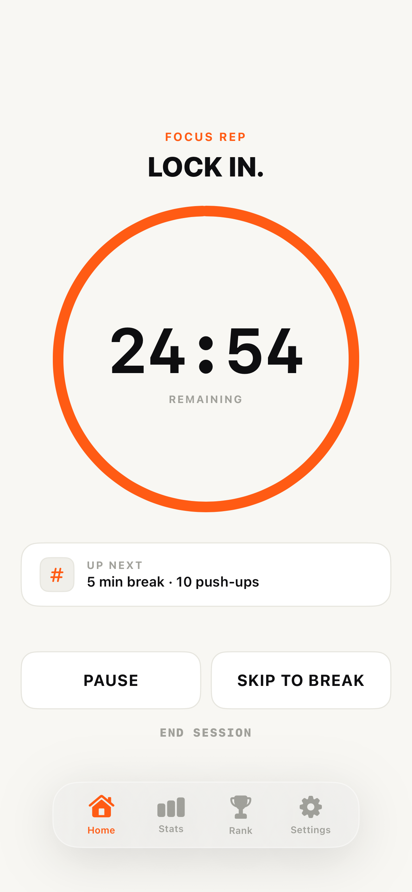
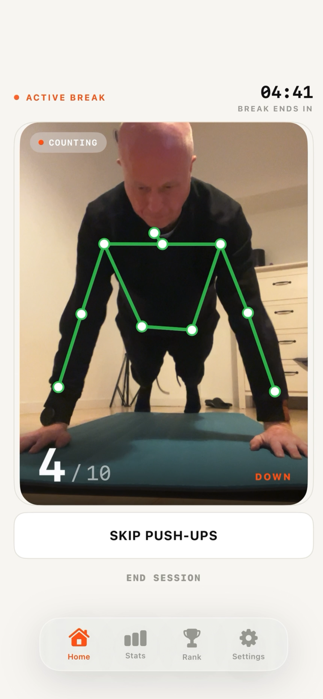
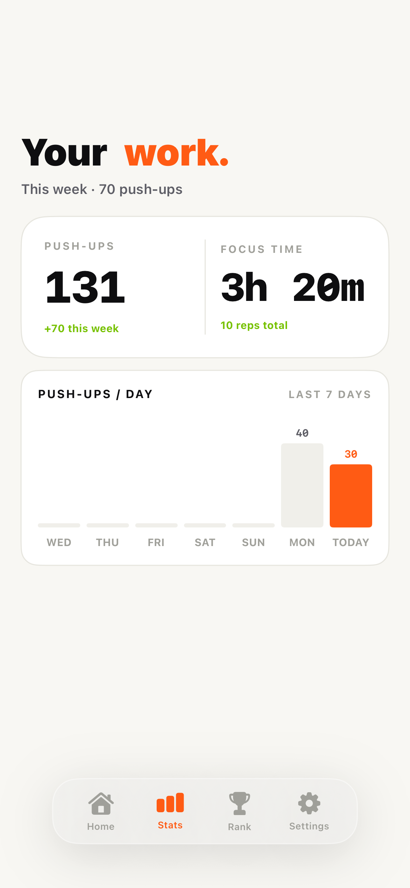
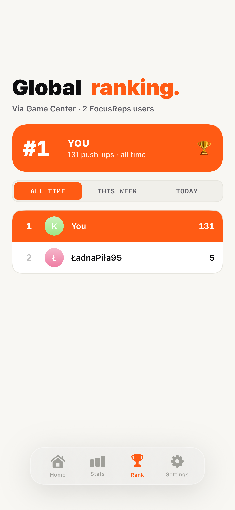

Camera rep counter
On-device pose detection counts push-ups in real time. Shallow reps do not count. Nervous tics do not count.
Focus on your work and make micro exercise in the break. Your camera will support you.
Pomodoro© apps leave the break empty, so you scroll. Rep counters live in a different app you forget to open. By 6 PM nothing moved. FocusReps makes the break the exercise, and the camera makes sure it actually happened.
A short burst of movement that fits inside a normal work break. Ten pushups. Ninety seconds. No gym, no change of clothes, no app to open. Sports scientists call these exercise snacks.
A 2022 review by Islam, Gibala and Little in Exercise and Sport Sciences Reviews defines them as isolated bouts of vigorous exercise under one minute, repeated through the day. In a 2019 study by Jenkins et al. in Applied Physiology, Nutrition, and Metabolism, sedentary adults doing three short stair climbing bouts a day, three days a week, improved VO2 peak by about five percent in six weeks. The pattern interrupts the metabolic cost of prolonged sitting. You do not need a workout. You need the body to stop being still.
The math is on your side. Ten pushups per break. Four breaks in a workday. That is forty pushups you did not do yesterday. Two hundred a workweek. Eight hundred a month. Nine thousand six hundred in a year. You will not feel it on Tuesday. You will feel it in October. Nothing changed except the break.
How it works
Default is 25 and 5 with 10 push-ups. Change it or just hit start.
Timer runs in the background. No notifications. No streak pressure.
Prop the phone. Step in frame. The camera counts every rep that goes deep enough.
When you have your push-ups done, rest and relax during the break so you get strength for the next focus session.
What you get





What it is
On-device pose detection counts push-ups in real time. Shallow reps do not count. Nervous tics do not count.
Default 25 and 5. Fully configurable. Pause without penalty when the meeting starts.
Focus blocks closed. Reps added up. One honest number per week, so sitting all day feels less wasted.
Each active break logs a workout with reps and estimated calories. Opt-in. Off by default.
Nothing leaves the phone. No account, no login, no video stored. Camera runs for the break and dies.
One tap to skip the break. Life happens. Streaks track focus, not perfection.
The receipt
FAQ
Real. On-device pose detection watches your form and ticks a rep only when your elbows go below ninety degrees and come back up. Shallow reps do not count. Nervous tics do not count.
Nowhere. Nothing uploads, nothing saves, no account exists. The camera does one job for your exercise and shuts off.
Push-ups for this version. If you like it I will add next exercises.
Yes. One tap. Life happens. Skipping does not break your focus streak, it just does not count toward reps.
Needs enough light to see your joints. A normally lit room is fine. A dark bedroom with one lamp will be unreliable. The app warns you before you start.
Your call. We just count what the camera sees. If a fake push-up means something to you, go for it.
Join the waitlist. First 50 testers get lifetime Pro.